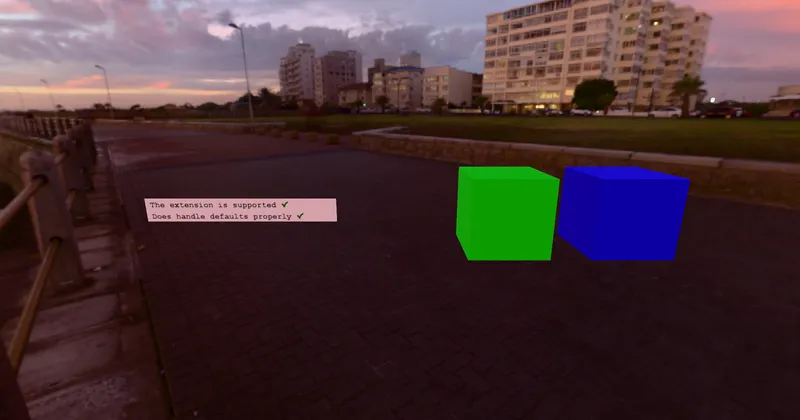

GLTF GLTF Extensions KHR_node_visibility
Node Visibility (2 Models) - RedGPU WebGPU Example
Verifies initial visible: false handling and visibility animation with Khronos NodeVisibilityTest and CubeVisibility.
Khronos 공식 NodeVisibilityTest와 CubeVisibility 모델로 초기 visible: false 반영 및 가시성 애니메이션을 검증합니다.
